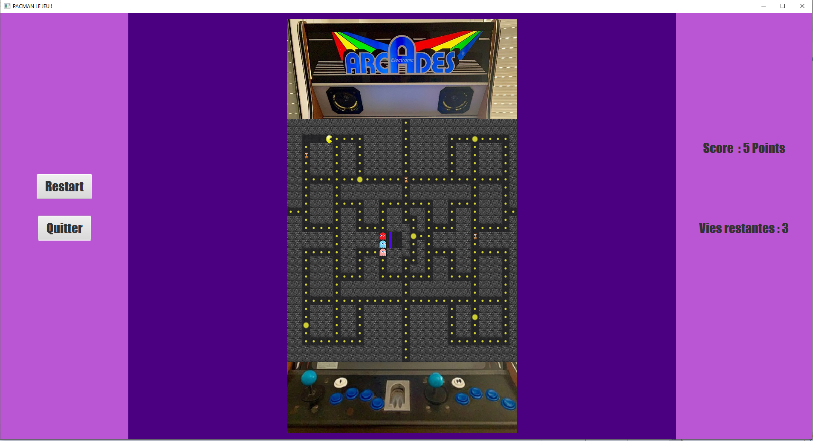

Vous pouvez télécharger ci-dessous le rapport .pdf détaillé, présenté lors de notre soutenance.
TéléchargerVous pouvez télécharger ci-dessous le jeu (archive .zip) dans son état le plus abouti.
TéléchargerSujet
Ce projet de première année d'école d'ingénieur avait pour but de créer une application graphique mettant en place le jeu arcade Pac-Man. Cette application, développée sous Java grâce à JavaFx, permet au joueur d’incarner le héros Pac Man, pour le faire se déplacer à l’aides des touches du clavier {z (haut), q(gauche), s(Bas), d(droite)} sur une carte ressemblant à un labyrinthe, avec des objets à ramasser (pacgum, super pacgum, sablier) et des ennemis (fantômes) à éviter. Nous nous sommes efforcés de développer notre application JavaFx en respectant le pattern Modèle-Vue-Contrôleur et en implémentant le jeu de manière la plus générique possible, pour permettre l’ajout rapide de fonctionnalités et le débogage.
Le Jeu
Notre jeu consiste en une boucle tant que, qui s’arrête dès que la partie se termine (clic sur le bouton Quitter par le joueur, si le joueur a récupéré tous les objets récupérables ou s’il n’a plus de vie et qu’il est touché par un fantôme. Chaque tour de jeu consiste en 4 déplacements du joueur et de 3 ou 4 déplacements des fantômes selon si le joueur est sous l’effet d’une super pacgum ou non. Les déplacements gérés par la classe Entite dont héritent PacMan et Fantome. Ils récupèrent la direction actuelle de l’entité et, si le déplacement est possible (la case cible est un couloir) et si l’entité est un fantôme, il choisit une nouvelle direction, en fonction de son IA et de la difficulté choisie (cette extension sera explicitée plus loin dans ce rapport). Pour améliorer l’expérience du joueur, un contour de la grille de jeu, représentant une borne d’arcade vintage, ainsi qu’un environnement coloré avec un affichage du score et du nombre de vies restantes a été ajouté. Sont également présents des boutons permettant de recommencer la partie ou de quitter la partie et de retourner au menu. Une musique d’ambiance est présente tout au long de la partie (différente pour les trois niveaux de difficulté) et des sons sont joués si Pac Man mange un objet, un fantôme, ou s’il est touché par un fantôme.
| Capture d'écran du jeu